QMDxKiro, November 2026
Q-PULSE
Dari requirement sampai pengingat di WhatsApp, dan cek defect langsung terhadap desain Figma.
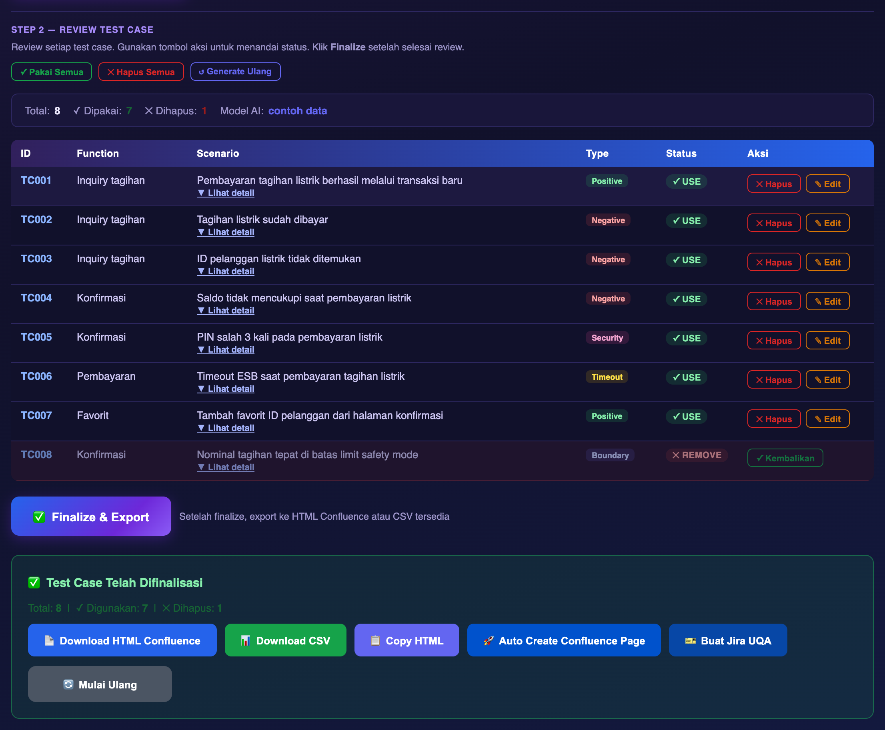
Data contoh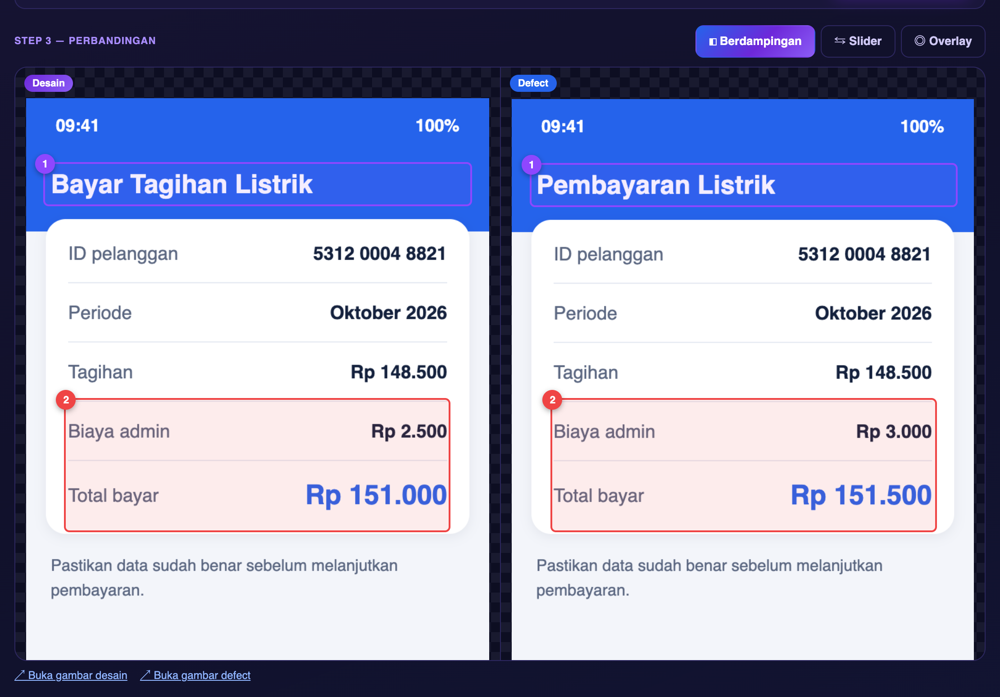
Data contohAplikasi ini punya banyak menu. Hari ini saya hanya bahas dua alur: dari test case sampai WhatsApp, dan Compare Defect. Semua gambar adalah tampilan asli aplikasi dengan data contoh.
Latar belakang
Satu fitur baru, empat pekerjaan yang berulang
- 01Menulis test caseSkenario per biller dan per kondisi ditulis satu per satu dari dokumen requirement.
- 02Mengisi tiket UQALebih dari 20 field di Jira, hampir semuanya sama dengan tiket sebelumnya.
- 03Mengingatkan tiketTiket yang belum Done dicek satu per satu, lalu dikabari lewat chat.
- 04Memeriksa defectScreenshot dibandingkan dengan frame Figma menggunakan mata.
Ini yang kita lakukan setiap ada fitur baru. Tidak ada yang sulit, tapi semuanya berulang dan gampang terlewat, terutama pengingat tiket dan pengecekan defect.
Gambaran besar
Dua alur dalam satu aplikasi
- RequirementTempel teks atau baca dari link Confluence
- Test caseAI menyusun skenario, kamu memilih yang dipakai
- Tiket UQAForm terisi, tiket dibuat di Jira setelah kamu klik
- WhatsAppPengingat dan laporan terkirim ke nomor atau grup
- Desain dan defectFrame Figma atau gambar upload, plus gambar dari tiket Jira
- PerbandinganBerdampingan, slider, atau overlay, dengan analisis AI opsional
- Komentar JiraDraf direview dulu, lalu dikirim bersama gambar bertanda
Alur A berjalan dari requirement sampai pesan WhatsApp. Alur B berdiri sendiri: bandingkan desain dengan defect lalu tulis hasilnya ke tiket. Keduanya memakai data dari Jira yang sama.
Alur A, langkah 1: test case
Requirement masuk, skenario keluar
- Dua sumber inputTempel teks requirement, atau masukkan link halaman Confluence dan isinya dibaca otomatis.
- Tiga batch paralelTransaksi, timeout, dan validasi sistem disusun bersamaan, tidak menunggu satu per satu.
- Satu skenario per billerRequirement dengan beberapa biller menghasilkan skenario terpisah untuk tiap biller.
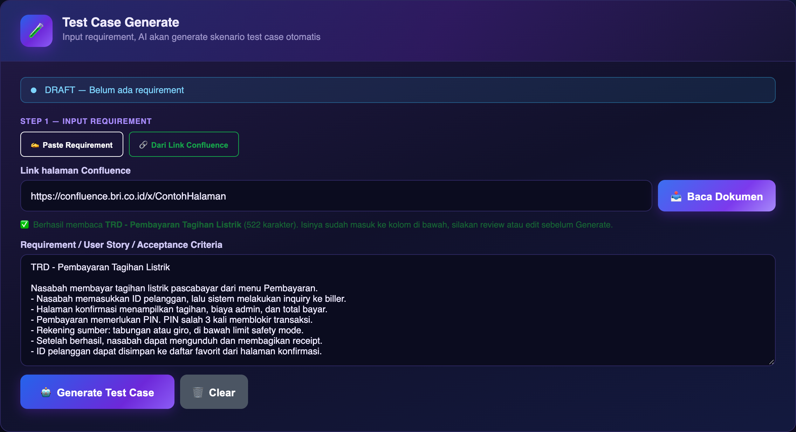
Data contohRequirement bisa ditempel langsung atau dibaca dari halaman Confluence. Hasil bacaan masuk ke kolom yang sama, jadi kamu bisa mengeditnya sebelum Generate. AI menyusun skenario dalam tiga batch yang jalan bersamaan.
Alur A, langkah 2: review
Kamu yang memutuskan skenario mana yang dipakai
- Tandai tiap skenarioUSE, REMOVE, atau edit. Ada juga tombol untuk memakai atau menghapus semuanya.
- Finalize membawa yang USESkenario yang dihapus tidak ikut ke keluaran.
- Tiga bentuk keluaranHalaman Confluence langsung dari aplikasi, file HTML, atau CSV.
AI hanya mengusulkan. Setiap skenario kamu putuskan sendiri. Setelah Finalize, jumlah yang dipakai itu juga yang nanti mengisi kolom SIT dan UAT di tiket.
Alur A, langkah 3: tiket Jira
Tiket UQA sudah terisi, kamu tinggal memeriksa
- Dihitung dan diisi otomatisIsi awal dari tiket UQA sebelumnya. Working Weeks dan Months dari tanggal hari ini, SIT dan UAT dari jumlah skenario yang dipakai.
- Sengaja dikosongkanAssigneeProduct TesterNCM IRISLink CMDefect SIT
- Dibuat setelah kamu klikTiket baru muncul di Jira hanya setelah tombol Buat Tiket ditekan.
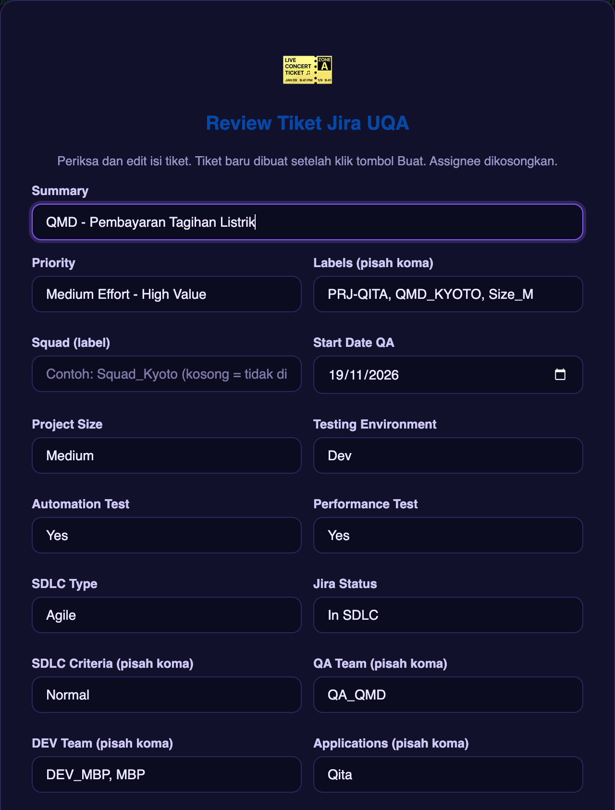
Data contoh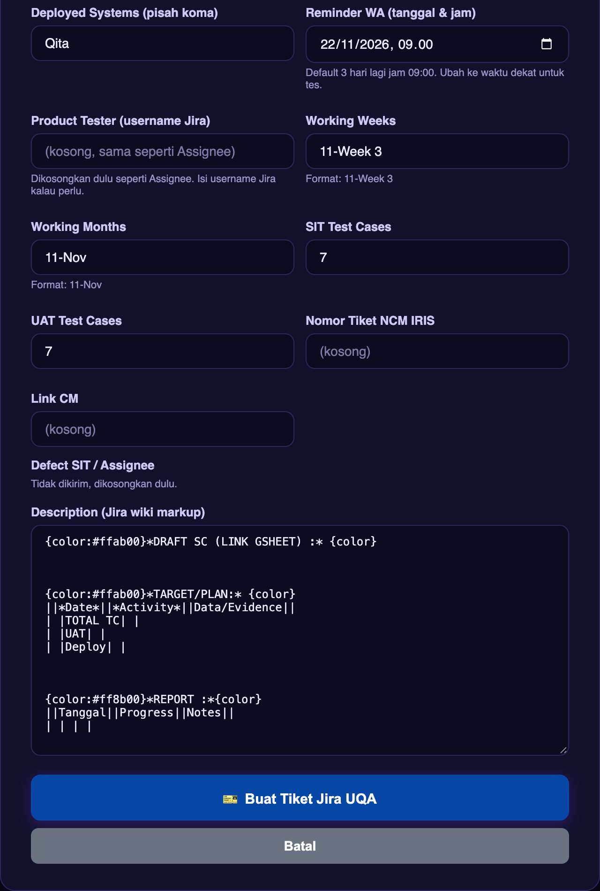
Form ini menggantikan belasan klik di Jira. Semua kolom tetap bisa diedit. Kolom yang berisi data orang atau data change management sengaja kosong, supaya tidak ada yang terisi tanpa disengaja.
Alur A, langkah 4: WhatsApp
Tiket yang belum Done diingatkan otomatis
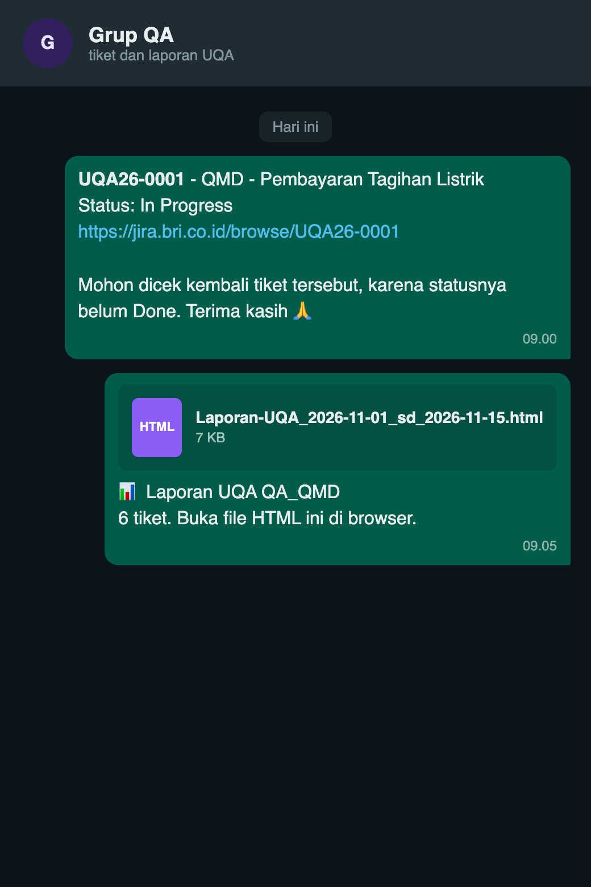
Tampilan contoh- WaktuDiatur per tiket di form. Bawaannya 3 hari lagi jam 09.00, dan bisa diubah ke beberapa menit untuk uji coba.
- CekSaat waktunya tiba, bot membaca status tiket langsung dari Jira. Antrean diperiksa tiap 30 detik.
- KirimPesan terkirim hanya kalau status belum Done. Tiket yang sudah Done atau sudah dihapus dilewati.
- TujuanNomor pribadi dan grup WhatsApp yang diatur di
.env.wa.
Pesan berisi key tiket, judul, status, dan link yang bisa langsung diklik. Kalau tiketnya sudah Done, bot diam. Jadi pesan yang masuk memang tiket yang perlu dilihat.
Alur A, langkah 5: laporan
Laporan UQA jadi satu file dan terkirim ke WhatsApp
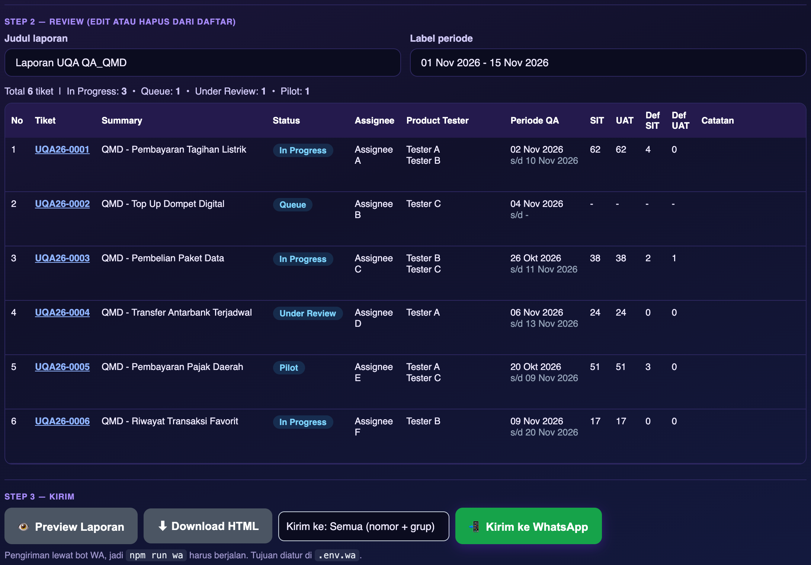
Review, data contoh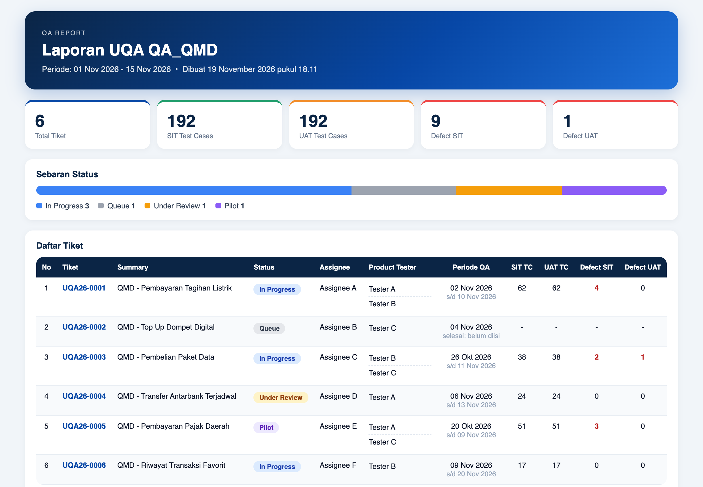
Hasil, data contohFilterStart dan Finish Date QA, atau tanggal tiket dibuat, dengan opsi selain yang sudah Done.
ReviewEdit atau hapus baris sebelum dikirim. Product Tester yang lebih dari satu tampil bersusun.
KirimFile HTML berisi status, jumlah SIT dan UAT, serta defect. Nama file memuat rentang tanggalnya.
Filter memakai query JQL yang sama dengan yang biasa dipakai tim. Hasilnya bisa kamu rapikan dulu di tabel review, lalu satu file HTML terkirim ke WhatsApp dan bisa dibuka di browser.
Alur B: Compare Defect
Lihat dulu desain dan gambar defect, baru bandingkan
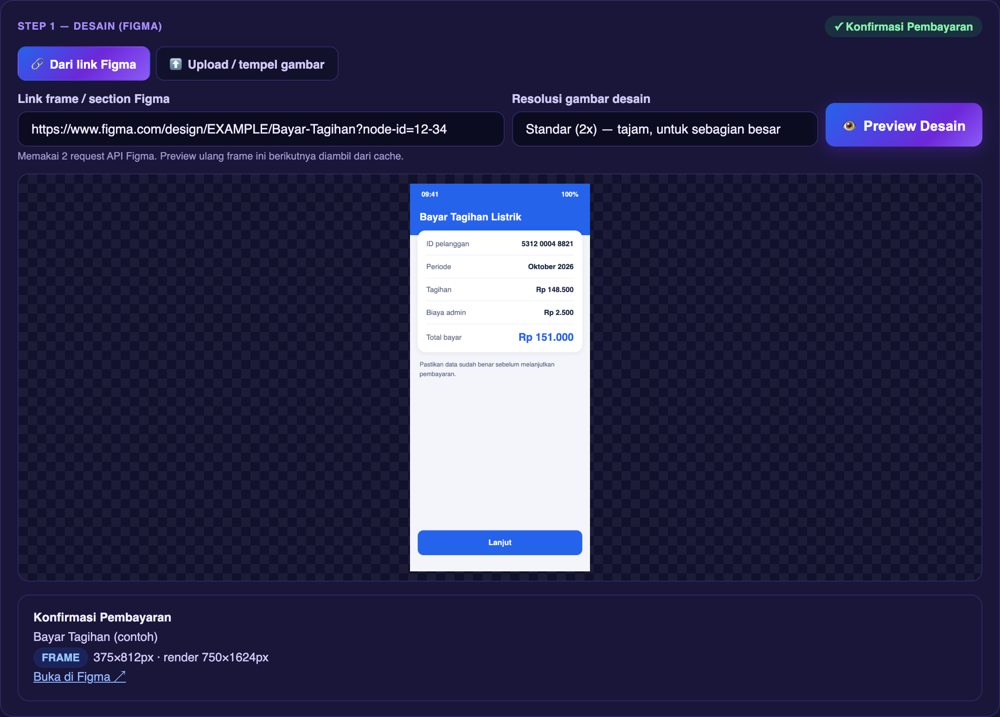
Data contoh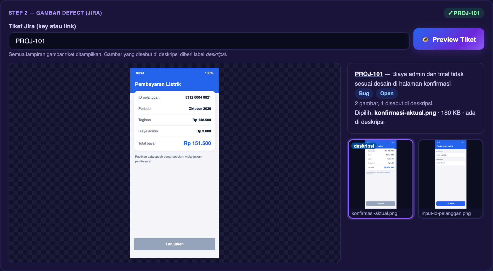
Data contohDua sumber ini dipratinjau terpisah supaya kamu yakin yang dibandingkan memang pasangan yang benar. Link Figma boleh menunjuk ke satu frame atau ke section berisi banyak layar, lalu kamu pilih salah satu.
Alur B: Compare Defect
Perbedaan ditandai di kedua gambar
- Tiga mode tampilanBerdampingan, slider, dan overlay dengan pengatur transparansi.
- AI opsionalGambar baru dikirim ke layanan AI eksternal setelah kamu mencentang persetujuan dan mengonfirmasi di dialog.
- Kotak bernomorNomornya sama dengan baris di tabel hasil. Warna kotak mengikuti tingkat HIGH, MEDIUM, atau LOW.
Tanpa AI pun kamu bisa membandingkan secara visual dengan tiga mode ini. Kalau AI dipakai, perbedaan ditandai dengan kotak yang nomornya cocok dengan tabel hasil.
Alur B: Compare Defect
Hasil analisis tampil sebagai tabel per area
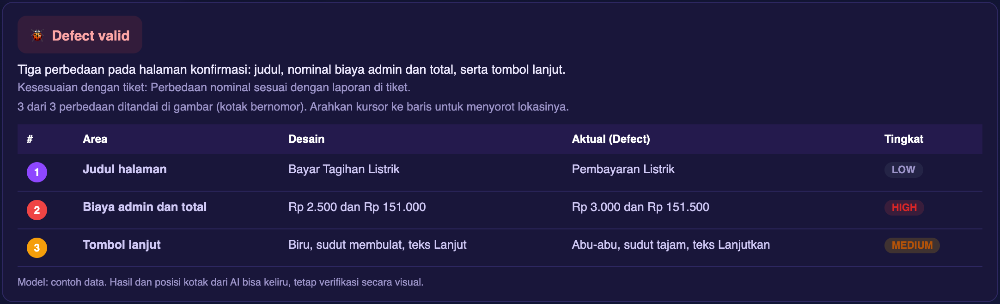
Hasil contohPenilaianDefect valid, sesuai desain, atau perlu dicek manual, disertai kesesuaian dengan isi tiket.
Tiap perbedaanPunya area, isi di desain, isi aktual, dan tingkat. Arahkan kursor ke baris untuk menyorot kotaknya di gambar.
Tetap diverifikasiHasil dan posisi kotak dari AI bisa keliru, jadi QA memeriksanya dengan mata sebelum dipakai.
Angka dan isi tabel di slide ini adalah contoh. AI hanya membantu menemukan area yang perlu dilihat. Keputusan tetap di QA.
Alur B: Compare Defect
Komentar ke Jira direview dulu, baru dikirim
- Draf terisi sendiriPenilaian, ringkasan, link frame Figma, dan tabel perbedaan dalam format Jira.
- Bebas dieditUbah sampai sesuai, atau buat ulang draf dari hasil analisis.
- Gambar bertanda ikutGambar perbandingan dengan kotak bernomor diunggah ke tiket sebagai lampiran.
- Kirim setelah konfirmasiDialog menunjukkan tiket tujuan, panjang komentar, dan status lampiran.
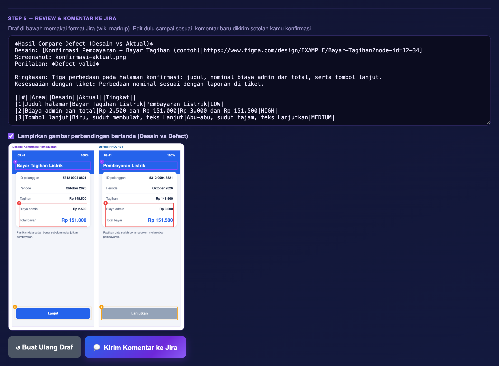
Data contohKomentar tidak pernah terkirim sendiri. Kamu membaca drafnya, mengubah seperlunya, lalu menekan kirim dan mengonfirmasi di dialog. Gambar bertanda ikut menjadi lampiran tiket.
Kontrol dan batas
Yang sengaja tidak berjalan sendiri
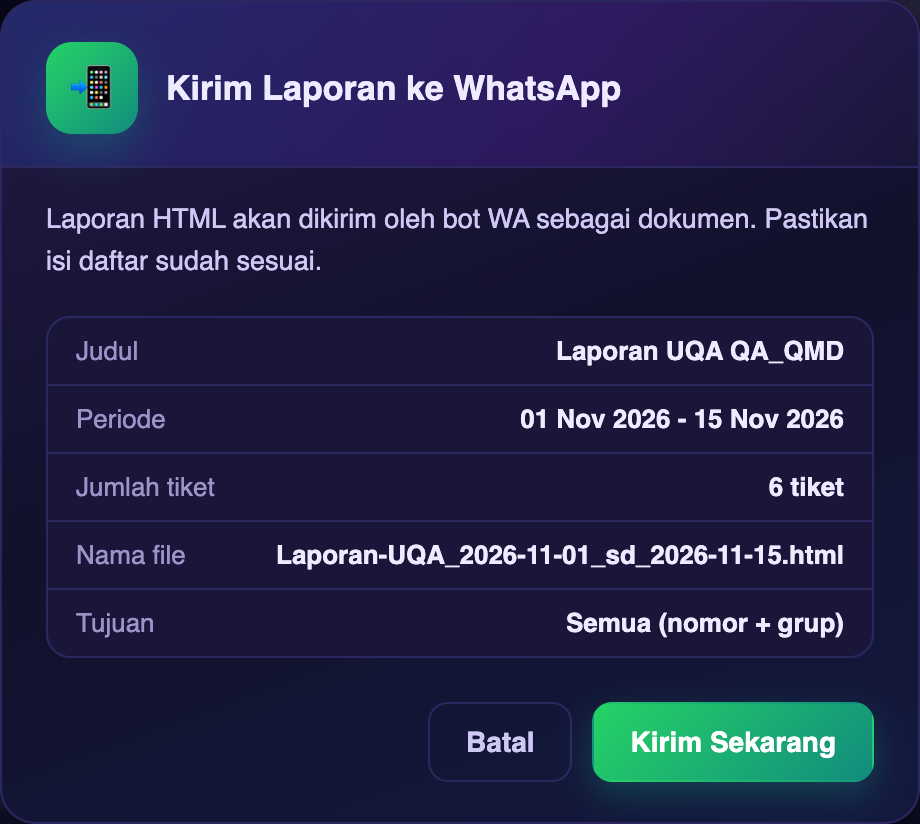
Contoh dialog konfirmasi sebelum laporan terkirim.
Selalu menunggu persetujuan kamu
- Tiket Jira dibuat setelah tombol Buat Tiket ditekan.
- Komentar dan lampiran ke Jira terkirim setelah dialog konfirmasi.
- Gambar dikirim ke layanan AI setelah persetujuan dicentang dan dikonfirmasi.
- Laporan ke WhatsApp terkirim setelah dialog konfirmasi.
Batas yang perlu diketahui
- Bot WhatsApp harus berjalan saat pengingat jatuh tempo. Yang terlewat dikirim ketika bot hidup lagi.
- WhatsApp memakai library tidak resmi, jadi sesi bisa terputus dan perlu scan QR ulang.
- Seat Figma View atau Collab hanya punya sekitar 6 request API per bulan. Render disimpan 7 hari, dan ada opsi upload gambar.
Semua langkah yang mengubah data di luar aplikasi, yaitu membuat tiket, menulis komentar, mengirim gambar ke AI, dan mengirim WhatsApp, menunggu konfirmasi kamu. Batas di kolom kanan sebaiknya diketahui sebelum dipakai tim.
Q-PULSE · QMDxKiro
Jalan di komputer lokal sekarang, online setelah izin keamanan
Untuk menjalankannya
- Node.js dan dependensi proyek.
- Token Jira dan Confluence di
.env, plus token Figma untuk Compare Defect. - API key untuk analisis AI, dan satu nomor WhatsApp untuk bot (scan QR sekali).
Usulan berikutnya
- Coba satu fitur nyata dari requirement sampai pengingat WhatsApp.
- Tentukan grup WhatsApp tujuan pengingat dan laporan.
- Minta seat Figma Dev kalau Compare Defect sering dipakai.
Sebelum aplikasi dipindah ke server, tanyakan ke tim keamanan. Aplikasi ini memakai token dan terhubung ke sistem BRI.
Sekarang aplikasi berjalan di komputer lokal. Untuk online, perlu izin tim keamanan dan login per pengguna, karena aplikasi memakai token dan menyentuh sistem BRI.